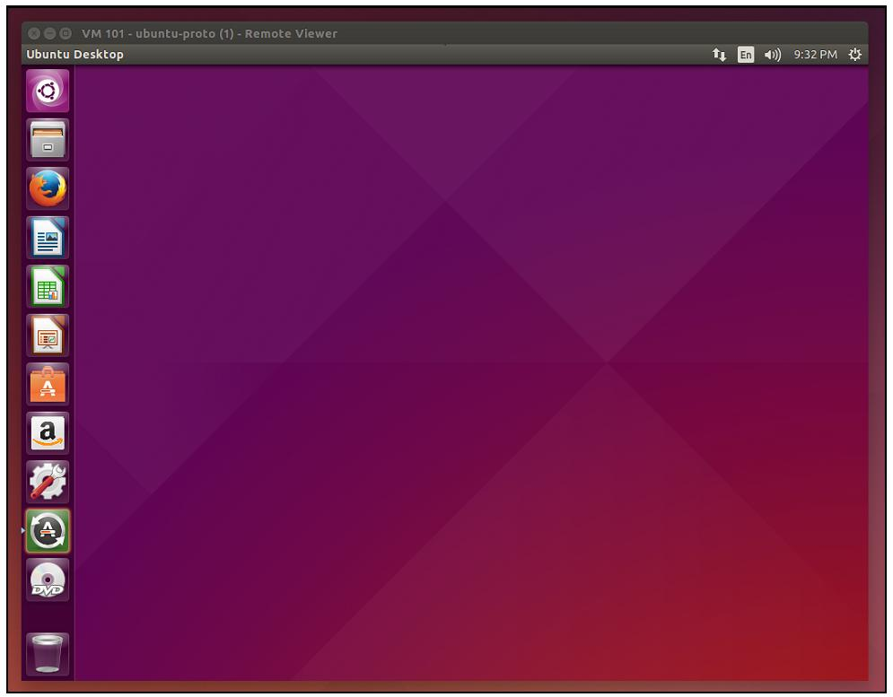

Глава 4. Создание виртуальных машин
"...Однако если понятие абстракции является настолько обыденным в ИТ, что тогда объясняет растущее увеличение виртуализации в последние годы? Эта тенденция ещё более бескомпромиссная в центрах обработки данных, где виртуализация глубоко укоренилась в стратегии развитя этих сред, начиная с середины 2000х. И страсть продолжает расти... Соответственно, эти объекты подверглись штурму со стороны виртуальных серверов, виртуальных сетевых сред, виртуальных хранилищ, виртуальных устройств и прочих "V- технологий", которые обещают избавление от оков реальности."
– Gustavo A. A. Santana, Data Center Virtualization Fundamentals
В Главе 3. Создание контейнеров мы исследовали создание, настройку и управление контейнеров LXC с использованием Proxmox VE. В этой главе мы переместим наше внимание на создание и управление виртуальными машинами KVM-QEMU посредством Proxmox VE.
Когда мы противопоставляли виртуальные машины и контейнеры в Главе 1. Основы Proxmox VE, мы воспользовались этой возможностью и погрузились глубже в определённые преимущества виртуальных машин, которые они всё ещё, кажется, имеют над контейнерами несмотря на явные признаки того, что мы находимся в плену революции контейнеров. Одновременно мы рассмотрим варианты применения, основанные на уже изученном материале.
Затем мы пройдём процесс извлечения виртуальных машин из образов ISO с применением Proxmox VE. PVE предназначен для платформы виртуализации серверов; в следствие этого мы осуществим создание и настройку двух ВМ: вначале выполним Microsoft Windows 2012r2, а затем исполним сервер Fedora Core 23.
Так как обе операционные системы имеют компоненты графического пользовательского интерфейса, мы будем использовать в своих интересах возможность исследовать дополнительное множество функциональности PVE, чем если бы могли получить в противном случае освещения подлинных потребностей.
В заключении Главы 4. Создание виртуальных машин, мы обсудим следующие аспекты полной виртуализации при помощи Proxmox VE:
-
Выгрузку ISO в локальные хранилища Proxmox VE
-
Создание и настройку виртуальных машин из веб- интерфейса PVE
-
Взаимодействие с ВМ с использованием свойств консоли веб- интерфейса PVE
-
Перенастройку виртуальной машины
-
Управление состоянием виртуальной машины
Для начала, однако, мы вернёмся на шаг назад и исследуем постоянно имеющуюся роль аппаратной виртуализации, даже не смотря на энтузиазм для контейнеров, отдающийся эхом вокруг нас.
Содержание
Хотя контейнеры явно получили впечатляющий импульс за столь короткий промежуток времени, виртуальные машины продолжают иметь существенные отличительные черты. Например:
-
Виртуальные машины могут выполнять любые операционные системы, разработанные для архитектуры вашего хоста; например, Android-x86, FreeBSD, Ubuntu, Windows Server и даже настольные ОС могут выполняться как отдельные машины на хосте Proxmox VE, при условии, что хост имеет достаточные ресурсы.
Рисунок 4.1.

Виртуальная машина Ubuntu 15.04 размещающаяся на Proxmox VE, доступ к которой осуществлён через параметр консоли SPICE в веб- интерфейсе PVE
-
Одна ВМ может размещать много контейнеров; когда мы ищем для творческих и опытных решениий центра обработки данных, мы хотели бы постоянно оставаться в курсе того, что виртуальная ОС и система виртуализации имеют дополняющие взаимосвязи, а не конкурирующие или противоречивые. До сих пор виртуальные машины предоставляют более тщательную изоляцию в сравнении с контейнерами.
-
Виртуальные машины и контейнеры требуют различные отношения и подходы к вопросам безопасности. Впечатляюще зрелые стандарты для систем виртуализации являются зрелыми и находятся в свободном доступе, в то время как информация по безопасности виртуализации ОС и стандартизованные решения пока не созрели.
![[Совет]](../common/images/admon/tip.png)
Совет Более подробно вопросы безопасности в PVE мы будем решать в Главе 7. Обеспечение безопасности Proxmox VE.
Отличительные черты систем виртуализации позволяют предположить, что в течение некоторого времени виртуальные машины являются более гибкими чем контейнеры; например, много операционных систем может сосуществовать одновременно на одном гипервизоре подобном Proxmox VE. Контейнеры не могут получить подобного. На текущий момент это означает, что чистые контейнеры могут существовать только когда хосты на основе GNU-/Linux имеют контейнеры GNU-/Linux, а контейнеры на основе Microsoft могут работать только на хостах на основе ОС Microsoft. Таким образом, размещаемым Proxmox VE контейнерам требуется чтобы ОС хоста разделяла библиотеки и исполняемые файлы GNU/Linux.
При том значительном импульсе, который имеет продвижение контейнеров, данное ограничение контейнеров на операционные системы Unix- типа может измениться очень скоро с выпуском Windows Server 2016, который в настоящее время доступен для предварительного просмотра; Microsoft объявил о своих планах по включению Docker в свой продукт (http://zdnet.com/article/microsoft-to-add-virtualized-containers-non-server-mode-to-windows-server-2016/, в свободном доступе 1 июня 2015).
![[Замечание]](../common/images/admon/note.png) | Замечание |
|---|---|
|
Docker является решением контейнеризации с открытым исходным кодом при очень активной разработке и это порождает значительное внимание. Краткое изучение наводит на мысль, что хост Windows выполняющий Docker может запускать контейнеры Linux. Этот контрапункт быстро разрешается как только мы осуществили выполнение этого Docker-ом посредством поддержки только уровня виртуализации подобного boot2docker (https://github.com/boot2docker/boot2docker). {Прим. пер.: см. также Установка Docker на Mac OS или Windows} |
Способная предъявлять претензии в отношении операционных систем гибкость системы виртуализации сказывается на стоимости: виртуальным машинам требуется больше ресурсов и их накладные расходу выше чем у контейнеров.
В следующем разделе мы изучим сценарии, которые тем не менее делают систему виртуализации интригующей.
Из рассмотренных ранее отличительных особенностей возникают некоторые очень мощные варианты применения. Например:
-
Разработка и тестирование кросс-платформенного программного обеспечения
-
Администрирование и управление системами на предприятиях, имеющих отношение ко множеству платформ
-
Зависимость от унаследованных приложений, систем или данных
-
Полигон для развёртывания новых систем или политик
-
Лаборатории, обслуживающие ИТ и ИКТ студентов
-
Производительность и стабильность на различных платформах
-
{Прим. пер.: Удалённая работа с различными ERP/CRM и/или CAD/CAE и пр. системами, в том числе с целью снижения совокупной стоимости владения как программного обеспечения так и совместно используемых аппаратных средств (включая Grid/Cuda, рендеринг и им подобные технологии, см., например, Nice DCV).}
Перечисленные сценарии выводят на передний план изменения, вносимые каждым отличием, в особенности между двумя формами виртуализации, поощряемые и поддерживаемые Proxmox VE, а именно, виртуальными машинами и контейнерами.
Данная глава уверенно продвигается к информационному заключению: контейнеры и виртуальные машины (или виртуализация ОС и виртуализация системы) представляют собой два различных инструмента, которые совместно предоставляют центру обработки данных и его инженерам мощную гибкость и возможность действовать по своему усмотрению (ре)формировании центра обработки данных.
Давайте рассмотрим процесс создания ВМ в Proxmox VE.
В данном разделе рассматривается обзор абстрактного процесса создания виртуальной машины, начиная с настройки вашей машины сквозь установку операционной системы и, в конечном итоге, управление её состоянием.
В наилучшем сценарии требуемая для новой виртуальной машины операционная система доступна в виде скачиваемого файла ISO. Такой отдельный файл предназначен для идеального представления CD или DVD целиком. В случае некоторых дистрибутивов GNU/ Linux полная среда установки может разделяться на несколько DVD.
Обычно в этом случае доступен образ диска для установки через сеть (netinst) и он
предоставляет достаточный объем операционной системы для управления системными устройствами, установщика с последующим скачиванием и
установкой запрашиваемого программного обеспечения из репозиториев в интернете.
Когда ОС доступна в виде ISO мы можем просто скачать её на удалённую рабочую станцию и затем разгрузить её на локальное хранилище вашего хоста PVE с помощью веб- интерфейса PVE, а затем выполнить создание вашей ВМ.
Выгрузка файла ISO на локальное хранилище PVE
Существует пять шагов для работы с образом ISO с удалённой рабочей станции.
-
Скачайте необходимый ISO из web на локальную рабочую станцию и убедитесь что образ не имеет повредлдений и не скомпрометирован (подробнее об этом процессе см. http://www.online-tech-tips.com/cool-websites/what-is-checksum/).
-
Перейдите к веб- интерфейсу Proxmox VE перейдя к нему в браузере (направьте ваш браузер по адресу
https://<ip address>:8006, где<ipaddress>является IP адресом PVE). -
В левой панели окна вашего браузера необходимо выбрать Server View. Под вашим ниспадающим меню должна быть доступна папка с именем Datacenter. Раскройте её содержимое чтобы отобразить ваш хост PVE, помеченный именем. Раскройте и его чтобы увидеть локальное хранилище хоста. В приводимом ниже экранном снимке, например, именем хоста PVE является
pve4, поэтому локальное хранилище помечено какlocal (pve4).
-
После выбора локального хранилища в правой панели должны появиться три закладки: Summary, Content и Permissions. Выберите закладку Content чтобы отобразить в правой панели ещё две кнопки, Templates и Uploads:
-
Для продолжения кликните на кнопку Uploads. В появившемся блоке диалога выберите в ниспадающем меню с именем Content выберите ISO image, затем кликните кнопку Select File… для просмотра файловой системы на предмет образа диска для его выгрузки в ваш хост PVE.
Замечание По умолчанию путь для выгрузки файлов ISO в локальное хранилище PVE через веб- интерфейс установлен в значение
/var/lib/template/iso. Имея это в виду, заметьте, что эти файлы также могут быть пересланы в данное местоположение на ваш сервер Proxmox VE с рабочей станции с помощьюscpилиsftpв случае, если эти инструменты установлены на вашей удалённой рабочей станции.
При установленном носителе доступном для PVE мы готовы к настройке и созданию ВМ при помощи веб- интерфейса Proxmox VE. Следующий раздел изучит этот процесс.
Мы начинаем наш процесс поиском имени нашего хоста и локального хранилища нашего экземпляра Proxmox VE в просмотре сервера веб- интерфейса своего PVE. Выберите свой хост и кликните кнопку Create VM (в правом верхнем углу страницы) для запуска настройки новой виртуальной машины.
В вашем окне браузера появится диалог с заголовком Create: Virtual Machine. Он применяется для предоставления начального описания вашей новой виртуальной машины, включая не только спецификацию аппаратных средств, но также и тип ОС и имя PVE, которое будет применяться для ссылки на новую ВМ.
Закладки слева направо выглядят так:
-
General
-
OS
-
CD/DVD
-
Hard Disk
-
CPU
-
Memory
-
Network
-
Confirm
По окончанию заполнения вкладки перемещайтесь вперёд либо кликая по следующей закладке в вашей последовательности, либо нажимая на кнопку Next.
Предупреждая вкладки настройки
Ниже приводится краткий обзор того, что мы можем ожидать увидеть в каждой вкладке своего диалога Create: Virtual Machine.
General
Имя и VM ID виртуальной машины определяются именно во вкладке General. Заметим, что поле "name" не относится к имени хоста ВМ; оно определяется при настройке ОС. Точнее, это имя, которое Proxmox VE будет применять для ссылки на данную ВМ в своём веб- интерфейсе.
В промышленной среде рекомендуется чтобы вы придерживались намеренной и систематичной схемы своего именования, точно так же как вы бы поступали с именем хоста в центре обработки данных.
При определении VM ID также важно быть строго систематичным. Хотя Proxmox VE и предоставляет по умолчанию номер VM ID, такая нумерация является произвольной вместо установленной системы, являющейся результатом хорошо сформированной политики.
В большой промышленной среде предусмотрите назначение идентификаторов ВМ в выделенном диапазоне по отношению к задачам виртуальных серверов (например, идентификаторы ВМ 1000-2000 для ВМ, предоставляющих веб службы). Вы по достоинству оцените это по мере увеличения вашего центра обработки данных, при систематизации вами планов резервного копирования и создания плана для управления жизненным циклом виртуального сервера.
OS
CD/DVD
Hard Disk
CPU
Memory
Network
Confirm
Управление состоянием виртуальной машины
Управление ВМ из командной строки PVE